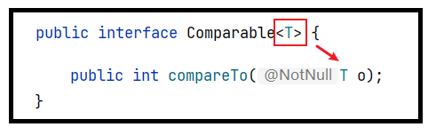
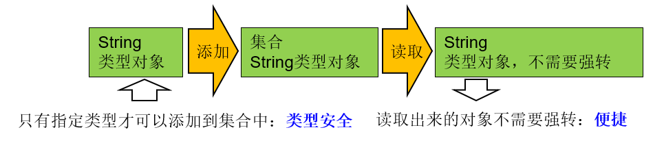

第13章_泛型(Generic)
本章专题与脉络

1. 泛型概述
1.1 生活中的例子
- 举例1：中药店，每个抽屉外面贴着标签
- 举例2：超市购物架上很多瓶子，每个瓶子装的是什么，有标签
- 举例3：家庭厨房中：
Java中的泛型，就类似于上述场景中的
标签。
1.2 泛型的引入
在Java中，我们在声明方法时，当在完成方法功能时如果有未知的数据需要参与，这些未知的数据需要在调用方法时才能确定，那么我们把这样的数据通过形参表示。在方法体中，用这个形参名来代表那个未知的数据，而调用者在调用时，对应的传入实参就可以了。

受以上启发，JDK1.5设计了泛型的概念。泛型即为“类型参数”，这个类型参数在声明它的类、接口或方法中，代表未知的某种通用类型。
举例1：
集合类在设计阶段/声明阶段不能确定这个容器到底实际存的是什么类型的对象，所以在JDK5.0之前只能把元素类型设计为Object，JDK5.0时Java引入了“参数化类型（Parameterized type）”的概念，允许我们在创建集合时指定集合元素的类型。比如：List<String>，这表明该List只能保存字符串类型的对象。
使用集合存储数据时，除了元素的类型不确定，其他部分是确定的（例如关于这个元素如何保存，如何管理等）。
举例2：
java.lang.Comparable接口和java.util.Comparator接口，是用于比较对象大小的接口。这两个接口只是限定了当一个对象大于另一个对象时返回正整数，小于返回负整数，等于返回0，但是并不确定是什么类型的对象比较大小。JDK5.0之前只能用Object类型表示，使用时既麻烦又不安全，因此 JDK5.0 给它们增加了泛型。

其中<T>就是类型参数，即泛型。
所谓泛型，就是允许在定义类、接口时通过一个
标识表示类中某个属性的类型或者是某个方法的返回值或参数的类型。这个类型参数将在使用时（例如，继承或实现这个接口、创建对象或调用方法时）确定（即传入实际的类型参数，也称为类型实参）。
2. 使用泛型举例
自从JDK5.0引入泛型的概念之后，对之前核心类库中的API做了很大的修改，例如：JDK5.0改写了集合框架中的全部接口和类、java.lang.Comparable接口、java.util.Comparator接口、Class类等。为这些接口、类增加了泛型支持，从而可以在声明变量、创建对象时传入类型实参。
2.1 集合中使用泛型
2.1.1 举例
集合中没有使用泛型时：
集合中使用泛型时：
Java泛型可以保证如果程序在编译时没有发出警告，运行时就不会产生ClassCastException异常。即，把不安全的因素在编译期间就排除了，而不是运行期；既然通过了编译，那么类型一定是符合要求的，就避免了类型转换。
同时，代码更加简洁、健壮。
把一个集合中的内容限制为一个特定的数据类型，这就是generic背后的核心思想。
举例：
//泛型在List中的使用
@Test
public void test1(){
//举例：将学生成绩保存在ArrayList中
//标准写法：
//ArrayList<Integer> list = new ArrayList<Integer>();
//jdk7的新特性：类型推断
ArrayList<Integer> list = new ArrayList<>();
list.add(56); //自动装箱
list.add(76);
list.add(88);
list.add(89);
//当添加非Integer类型数据时，编译不通过
//list.add("Tom");//编译报错
Iterator<Integer> iterator = list.iterator();
while(iterator.hasNext()){
//不需要强转，直接可以获取添加时的元素的数据类型
Integer score = iterator.next();
System.out.println(score);
}
}举例：
//泛型在Map中的使用
@Test
public void test2(){
HashMap<String,Integer> map = new HashMap<>();
map.put("Tom",67);
map.put("Jim",56);
map.put("Rose",88);
//编译不通过
// map.put(67,"Jack");
//遍历key集
Set<String> keySet = map.keySet();
for(String str:keySet){
System.out.println(str);
}
//遍历value集
Collection<Integer> values = map.values();
Iterator<Integer> iterator = values.iterator();
while(iterator.hasNext()){
Integer value = iterator.next();
System.out.println(value);
}
//遍历entry集
Set<Map.Entry<String, Integer>> entrySet = map.entrySet();
Iterator<Map.Entry<String, Integer>> iterator1 = entrySet.iterator();
while(iterator1.hasNext()){
Map.Entry<String, Integer> entry = iterator1.next();
String key = entry.getKey();
Integer value = entry.getValue();
System.out.println(key + ":" + value);
}
}2.1.2 练习
练习1：
（1）创建一个ArrayList集合对象，并指定泛型为<Integer>
（2）添加5个[0,100)以内的整数到集合中
（3）使用foreach遍历输出5个整数
（4）使用集合的removeIf方法删除偶数，为Predicate接口指定泛型<Ineteger>
（5）再使用Iterator迭代器输出剩下的元素，为Iterator接口指定泛型<Integer>package com.atguigu.genericclass.use;
import java.util.ArrayList;
import java.util.Iterator;
import java.util.Random;
import java.util.function.Predicate;
public class TestNumber {
public static void main(String[] args) {
ArrayList<Integer> coll = new ArrayList<Integer>();
Random random = new Random();
for (int i = 1; i <= 5 ; i++) {
coll.add(random.nextInt(100));
}
System.out.println("coll中5个随机数是：");
for (Integer integer : coll) {
System.out.println(integer);
}
//方式1：使用集合的removeIf方法删除偶数
coll.removeIf(new Predicate<Integer>() {
@Override
public boolean test(Integer integer) {
return integer % 2 == 0;
}
});
//方式2：调用Iterator接口的remove()方法
//Iterator<Integer> iterator1 = coll.iterator();
//while(coll.hasNext()){
// Integer i = coll.next();
// if(i % 2 == 0){
// coll.remove();
// }
//}
System.out.println("coll中删除偶数后：");
Iterator<Integer> iterator = coll.iterator();
while(iterator.hasNext()){
Integer number = iterator.next();
System.out.println(number);
}
}
}练习2：编写一个简单的同学通迅录
需求说明：
- 查询所有通讯录的同学信息。
- 输入姓名，根据姓名查询指定同学信息。如果该姓名不存在，输出提示信息。
- 添加同学，姓名重复的不能添加。
- 根据学员姓名删除学员。
- 按姓名排序查询学员。
分析：
- 使用HashMap<K,V>存储同学信息，使用同学姓名做key，同学对象做value。
- 同学对象包含的属性有：姓名、年龄、住址、爱好等。
2.2 比较器中使用泛型
2.2.1 举例
package com.atguigu.generic;
public class Circle{
private double radius;
public Circle(double radius) {
super();
this.radius = radius;
}
public double getRadius() {
return radius;
}
public void setRadius(double radius) {
this.radius = radius;
}
@Override
public String toString() {
return "Circle [radius=" + radius + "]";
}
}使用泛型之前：
package com.atguigu.generic;
import java.util.Comparator;
class CircleComparator implements Comparator{
@Override
public int compare(Object o1, Object o2) {
//强制类型转换
Circle c1 = (Circle) o1;
Circle c2 = (Circle) o2;
return Double.compare(c1.getRadius(), c2.getRadius());
}
}
//测试：
public class TestNoGeneric {
public static void main(String[] args) {
CircleComparator com = new CircleComparator();
System.out.println(com.compare(new Circle(1), new Circle(2)));
System.out.println(com.compare("圆1", "圆2"));//运行时异常：ClassCastException
}
}使用泛型之后：
package com.atguigu.generic;
import java.util.Comparator;
class CircleComparator1 implements Comparator<Circle> {
@Override
public int compare(Circle o1, Circle o2) {
//不再需要强制类型转换，代码更简洁
return Double.compare(o1.getRadius(), o2.getRadius());
}
}
//测试类
public class TestHasGeneric {
public static void main(String[] args) {
CircleComparator1 com = new CircleComparator1();
System.out.println(com.compare(new Circle(1), new Circle(2)));
//System.out.println(com.compare("圆1", "圆2"));
//编译错误，因为"圆1", "圆2"不是Circle类型，是String类型，编译器提前报错，
//而不是冒着风险在运行时再报错。
}
}2.2.2 练习
（1）声明矩形类Rectangle，包含属性长和宽，属性私有化，提供有参构造、get/set方法、重写toString方法，提供求面积和周长的方法。
（2）矩形类Rectangle实现java.lang.Comparable
（3）在测试类中，创建Rectangle数组，并创建5个矩形对象
（4）调用Arrays的sort方法，给矩形数组排序，并显示排序前后的结果。
package com.atguigu.genericclass.use;
public class Rectangle implements Comparable<Rectangle>{
private double length;
private double width;
public Rectangle(double length, double width) {
this.length = length;
this.width = width;
}
public double getLength() {
return length;
}
public void setLength(double length) {
this.length = length;
}
public double getWidth() {
return width;
}
public void setWidth(double width) {
this.width = width;
}
//获取面积
public double area(){
return length * width;
}
//获取周长
public double perimeter(){
return 2 * (length + width);
}
@Override
public String toString() {
return "Rectangle{" +
"length=" + length +
", width=" + width +
",area =" + area() +
",perimeter = " + perimeter() +
'}';
}
@Override
public int compareTo(Rectangle o) {
int compare = Double.compare(area(), o.area());
return compare != 0 ? compare : Double.compare(perimeter(),o.perimeter());
}
}
package com.atguigu.genericclass.use;
import java.util.Arrays;
public class TestRectangle {
public static void main(String[] args) {
Rectangle[] arr = new Rectangle[4];
arr[0] = new Rectangle(6,2);
arr[1] = new Rectangle(4,3);
arr[2] = new Rectangle(12,1);
arr[3] = new Rectangle(5,4);
System.out.println("排序之前：");
for (Rectangle rectangle : arr) {
System.out.println(rectangle);
}
Arrays.sort(arr);
System.out.println("排序之后：");
for (Rectangle rectangle : arr) {
System.out.println(rectangle);
}
}
}
2.3 相关使用说明
在创建集合对象的时候，可以指明泛型的类型。
具体格式为：List
list = new ArrayList (); JDK7.0时，有新特性，可以简写为：
List
list = new ArrayList<>(); //类型推断 泛型，也称为泛型参数，即参数的类型，只能使用引用数据类型进行赋值。（不能使用基本数据类型，可以使用包装类替换）
集合声明时，声明泛型参数。在使用集合时，可以具体指明泛型的类型。一旦指明，类或接口内部，凡是使用泛型参数的位置，都指定为具体的参数类型。如果没有指明的话，看做是Object类型。
3. 自定义泛型结构
3.1 泛型的基础说明
1、<类型>这种语法形式就叫泛型。
<类型>的形式我们称为类型参数，这里的”类型”习惯上使用T表示，是Type的缩写。即：
。 ：代表未知的数据类型，我们可以指定为 ， ， 等。 - 类比方法的参数的概念，我们把
，称为类型形参，将 称为类型实参，有助于我们理解泛型
- 类比方法的参数的概念，我们把
这里的T，可以替换成K，V等任意字母。
2、在哪里可以声明类型变量<T>
- 声明类或接口时，在类名或接口名后面声明泛型类型，我们把这样的类或接口称为
泛型类或泛型接口。
【修饰符】 class 类名<类型变量列表> 【extends 父类】 【implements 接口们】{
}
【修饰符】 interface 接口名<类型变量列表> 【implements 接口们】{
}
//例如：
public class ArrayList<E>
public interface Map<K,V>{
....
} - 声明方法时，在【修饰符】与返回值类型之间声明类型变量，我们把声明了类型变量的方法，称为泛型方法。
[修饰符] <类型变量列表> 返回值类型 方法名([形参列表])[throws 异常列表]{
//...
}
//例如：java.util.Arrays类中的
public static <T> List<T> asList(T... a){
....
}3.2 自定义泛型类或泛型接口
当我们在类或接口中定义某个成员时，该成员的相关类型是不确定的，而这个类型需要在使用这个类或接口时才可以确定，那么我们可以使用泛型类、泛型接口。
3.2.1 说明
① 我们在声明完自定义泛型类以后，可以在类的内部（比如：属性、方法、构造器中）使用类的泛型。
② 我们在创建自定义泛型类的对象时，可以指明泛型参数类型。一旦指明，内部凡是使用类的泛型参数的位置，都具体化为指定的类的泛型类型。
③ 如果在创建自定义泛型类的对象时，没有指明泛型参数类型，那么泛型将被擦除，泛型对应的类型均按照Object处理，但不等价于Object。
- 经验：泛型要使用一路都用。要不用，一路都不要用。
④ 泛型的指定中必须使用引用数据类型。不能使用基本数据类型，此时只能使用包装类替换。
⑤ 除创建泛型类对象外，子类继承泛型类时、实现类实现泛型接口时，也可以确定泛型结构中的泛型参数。
如果我们在给泛型类提供子类时，子类也不确定泛型的类型，则可以继续使用泛型参数。
我们还可以在现有的父类的泛型参数的基础上，新增泛型参数。
3.2.2 注意
① 泛型类可能有多个参数，此时应将多个参数一起放在尖括号内。比如：<E1,E2,E3>
② JDK7.0 开始，泛型的简化操作：ArrayList
③ 如果泛型结构是一个接口或抽象类，则不可创建泛型类的对象。
④ 不能使用new E[]。但是可以：E[] elements = (E[])new Object[capacity];
参考：ArrayList源码中声明：Object[] elementData，而非泛型参数类型数组。
⑤ 在类/接口上声明的泛型，在本类或本接口中即代表某种类型，但不可以在静态方法中使用类的泛型。
⑥ 异常类不能是带泛型的。
3.2.2 举例
举例1：
class Person<T> {
// 使用T类型定义变量
private T info;
// 使用T类型定义一般方法
public T getInfo() {
return info;
}
public void setInfo(T info) {
this.info = info;
}
// 使用T类型定义构造器
public Person() {
}
public Person(T info) {
this.info = info;
}
// static的方法中不能声明泛型
//public static void show(T t) {
//
//}
// 不能在try-catch中使用泛型定义
//public void test() {
//try {
//
//} catch (MyException<T> ex) {
//
//}
//}
}
举例2：
class Father<T1, T2> {
}
// 子类不保留父类的泛型
// 1)没有类型 擦除
class Son1 extends Father {// 等价于class Son extends Father<Object,Object>{
}
// 2)具体类型
class Son2 extends Father<Integer, String> {
}
// 子类保留父类的泛型
// 1)全部保留
class Son3<T1, T2> extends Father<T1, T2> {
}
// 2)部分保留
class Son4<T2> extends Father<Integer, T2> {
}
举例3：
class Father<T1, T2> {
}
// 子类不保留父类的泛型
// 1)没有类型 擦除
class Son<A, B> extends Father{//等价于class Son extends Father<Object,Object>{
}
// 2)具体类型
class Son2<A, B> extends Father<Integer, String> {
}
// 子类保留父类的泛型
// 1)全部保留
class Son3<T1, T2, A, B> extends Father<T1, T2> {
}
// 2)部分保留
class Son4<T2, A, B> extends Father<Integer, T2> {
}
3.2.3 练习
练习1：
声明一个学生类，该学生包含姓名、成绩，而此时学生的成绩类型不确定，为什么呢，因为，语文老师希望成绩是“优秀”、“良好”、“及格”、“不及格”，数学老师希望成绩是89.5, 65.0，英语老师希望成绩是’A’,’B’,’C’,’D’,’E’。那么我们在设计这个学生类时，就可以使用泛型。
package com.atguigu.genericclass.define;
class Student<T>{
private String name;
private T score;
public Student() {
super();
}
public Student(String name, T score) {
super();
this.name = name;
this.score = score;
}
public String getName() {
return name;
}
public void setName(String name) {
this.name = name;
}
public T getScore() {
return score;
}
public void setScore(T score) {
this.score = score;
}
@Override
public String toString() {
return "姓名：" + name + ", 成绩：" + score;
}
}
public class TestStudent {
public static void main(String[] args) {
//语文老师使用时：
Student<String> stu1 = new Student<String>("张三", "良好");
//数学老师使用时：
//Student<double> stu2 = new Student<double>("张三", 90.5);//错误，必须是引用数据类型
Student<Double> stu2 = new Student<Double>("张三", 90.5);
//英语老师使用时：
Student<Character> stu3 = new Student<Character>("张三", 'C');
//错误的指定
//Student<Object> stu = new Student<String>();//错误的
}
}
练习2：
定义个泛型类 DAO<T>，在其中定义一个Map 成员变量，Map 的键为 String 类型，值为 T 类型。
分别创建以下方法：
public void save(String id,T entity)： 保存 T 类型的对象到 Map 成员变量中
public T get(String id)：从 map 中获取 id 对应的对象
public void update(String id,T entity)：替换 map 中key为id的内容,改为 entity 对象
public List<T> list()：返回 map 中存放的所有 T 对象
public void delete(String id)：删除指定 id 对象
定义一个 User 类：
该类包含：private成员变量（int类型） id，age；（String 类型）name。
定义一个测试类：
创建 DAO 类的对象， 分别调用其 save、get、update、list、delete 方法来操作 User 对象，
使用 Junit 单元测试类进行测试。代码实现：
/**
* @author 尚硅谷-宋红康
* @create 8:45
*/
public class DAO<T> {
private Map<String,T> map ;
{
map = new HashMap<String,T>();
}
//保存 T 类型的对象到 Map 成员变量中
public void save(String id,T entity){
if(!map.containsKey(id)){
map.put(id,entity);
}
}
//从 map 中获取 id 对应的对象
public T get(String id){
return map.get(id);
}
//替换 map 中key为id的内容,改为 entity 对象
public void update(String id,T entity){
if(map.containsKey(id)){
map.put(id,entity);
}
}
//返回 map 中存放的所有 T 对象
public List<T> list(){
//错误的：
// Collection<T> values = map.values();
// System.out.println(values.getClass());
// return (List<T>) values;
//正确的方式1：
// ArrayList<T> list = new ArrayList<>();
// Collection<T> values = map.values();
// list.addAll(values);
// return list;
//正确的方式2：
Collection<T> values = map.values();
ArrayList<T> list = new ArrayList<>(values);
return list;
}
//删除指定 id 对象
public void delete(String id){
map.remove(id);
}
}package com.atguigu02.selfdefine.exer1;
import java.util.Objects;
/**
* 定义一个 User 类：
* 该类包含：private成员变量（int类型） id，age；（String 类型）name。
*
* @author 尚硅谷-宋红康
* @create 9:02
*/
public class User {
private int id;
private int age;
private String name;
public User() {
}
public User(int id, int age, String name) {
this.id = id;
this.age = age;
this.name = name;
}
public int getId() {
return id;
}
public void setId(int id) {
this.id = id;
}
public int getAge() {
return age;
}
public void setAge(int age) {
this.age = age;
}
public String getName() {
return name;
}
public void setName(String name) {
this.name = name;
}
@Override
public String toString() {
return "User{" +
"id=" + id +
", age=" + age +
", name='" + name + '\'' +
'}';
}
@Override
public boolean equals(Object o) {
if (this == o) return true;
if (o == null || getClass() != o.getClass()) return false;
User user = (User) o;
return id == user.id && age == user.age && Objects.equals(name, user.name);
}
@Override
public int hashCode() {
return Objects.hash(id, age, name);
}
}package com.atguigu02.selfdefine.exer1;
import java.util.List;
/**
* @author 尚硅谷-宋红康
* @create 9:04
*/
public class DAOTest {
public static void main(String[] args) {
DAO<User> dao = new DAO<>();
dao.save("1001",new User(1,34,"曹操"));
dao.save("1002",new User(2,33,"刘备"));
dao.save("1003",new User(3,24,"孙权"));
dao.update("1002",new User(2,23,"刘禅"));
dao.delete("1003");
List<User> list = dao.list();
for(User u : list){
System.out.println(u);
}
}
}3.3 自定义泛型方法
如果我们定义类、接口时没有使用<泛型参数>，但是某个方法形参类型不确定时，这个方法可以单独定义<泛型参数>。
3.3.1 说明
- 泛型方法的格式：
[访问权限] <泛型> 返回值类型 方法名([泛型标识 参数名称]) [抛出的异常]{
}- 方法，也可以被泛型化，与其所在的类是否是泛型类没有关系。
- 泛型方法中的泛型参数在方法被调用时确定。
- 泛型方法可以根据需要，声明为static的。
3.3.2 举例
举例1：
public class DAO {
public <E> E get(int id, E e) {
E result = null;
return result;
}
}
举例2：
public static <T> void fromArrayToCollection(T[] a, Collection<T> c) {
for (T o : a) {
c.add(o);
}
}
public static void main(String[] args) {
Object[] ao = new Object[100];
Collection<Object> co = new ArrayList<Object>();
fromArrayToCollection(ao, co);
String[] sa = new String[20];
Collection<String> cs = new ArrayList<>();
fromArrayToCollection(sa, cs);
Collection<Double> cd = new ArrayList<>();
// 下面代码中T是Double类，但sa是String类型，编译错误。
// fromArrayToCollection(sa, cd);
// 下面代码中T是Object类型，sa是String类型，可以赋值成功。
fromArrayToCollection(sa, co);
}
举例3：
class MyArrays {
public static <T> void sort(T[] arr){
for (int i = 1; i < arr.length; i++) {
for (int j = 0; j < arr.length-i; j++) {
if(((Comparable<T>)arr[j]).compareTo(arr[j+1])>0){
T temp = arr[j];
arr[j] = arr[j+1];
arr[j+1] = temp;
}
}
}
}
}
public class MyArraysTest {
public static void main(String[] args) {
int[] arr = {3,2,5,1,4};
// MyArrays.sort(arr);//错误的，因为int[]不是对象数组
String[] strings = {"hello","java","song"};
MyArrays.sort(strings);
System.out.println(Arrays.toString(strings));
Circle[] circles = {new Circle(2.0),new Circle(1.2),new Circle(3.0)};
MyArrays.sort(circles); //编译通过，运行报错，因为Circle没有实现Comparable接口
}
}3.3.3 练习
练习1: 泛型方法
编写一个泛型方法，实现任意引用类型数组指定位置元素交换。
public static
/**
* @author 尚硅谷-宋红康
* @create 9:11
*/
public class Exer01 {
//编写一个泛型方法，实现任意引用类型数组指定位置元素交换。
public static <E> void method( E[] arr,int a,int b){
E temp = arr[a];
arr[a] = arr[b];
arr[b] = temp;
}
@Test
public void testMethod(){
Integer[] arr = new Integer[]{10,20,30,40};
method(arr,2,3);
for(Integer i : arr){
System.out.println(i);
}
}
}练习2: 泛型方法
编写一个泛型方法，接收一个任意引用类型的数组，并反转数组中的所有元素
public static
/**
* @author 尚硅谷-宋红康
* @create 9:11
*/
public class Exer01 {
//编写一个泛型方法，接收一个任意引用类型的数组，并反转数组中的所有元素
public static <E> void method1( E[] arr){
for(int min = 0,max = arr.length - 1;min < max; min++,max--){
E temp = arr[min];
arr[min] = arr[max];
arr[max] = temp;
}
}
@Test
public void testMethod1(){
Integer[] arr = new Integer[]{10,20,30,40};
method1(arr);
for(Integer i : arr){
System.out.println(i);
}
}
}4. 泛型在继承上的体现
如果B是A的一个子类型（子类或者子接口），而G是具有泛型声明的类或接口，G并不是G的子类型！
比如：String是Object的子类，但是List
public void testGenericAndSubClass() {
Person[] persons = null;
Man[] mans = null;
//Person[] 是 Man[] 的父类
persons = mans;
Person p = mans[0];
// 在泛型的集合上
List<Person> personList = null;
List<Man> manList = null;
//personList = manList;(报错)
}思考：对比如下两段代码有何不同：
片段1：
public void printCollection(Collection c) {
Iterator i = c.iterator();
for (int k = 0; k < c.size(); k++) {
System.out.println(i.next());
}
}片段2：
public void printCollection(Collection<Object> c) {
for (Object e : c) {
System.out.println(e);
}
}5. 通配符的使用
当我们声明一个变量/形参时，这个变量/形参的类型是一个泛型类或泛型接口，例如：Comparator
5.1 通配符的理解
使用类型通配符：？
比如：List<?>，Map<?,?>
List<?>是List<String>、List<Object>等各种泛型List的父类。
5.2 通配符的读与写
写操作：
将任意元素加入到其中不是类型安全的：
Collection<?> c = new ArrayList<String>();
c.add(new Object()); // 编译时错误因为我们不知道c的元素类型，我们不能向其中添加对象。add方法有类型参数E作为集合的元素类型。我们传给add的任何参数都必须是一个未知类型的子类。因为我们不知道那是什么类型，所以我们无法传任何东西进去。
唯一可以插入的元素是null，因为它是所有引用类型的默认值。
读操作：
另一方面，读取List<?>的对象list中的元素时，永远是安全的，因为不管 list 的真实类型是什么，它包含的都是Object。
举例1：
public class TestWildcard {
public static void m4(Collection<?> coll){
for (Object o : coll) {
System.out.println(o);
}
}
}举例2：
public static void main(String[] args) {
List<?> list = null;
list = new ArrayList<String>();
list = new ArrayList<Double>();
// list.add(3);//编译不通过
list.add(null);
List<String> l1 = new ArrayList<String>();
List<Integer> l2 = new ArrayList<Integer>();
l1.add("尚硅谷");
l2.add(15);
read(l1);
read(l2);
}
public static void read(List<?> list) {
for (Object o : list) {
System.out.println(o);
}
}
5.3 使用注意点
注意点1：编译错误：不能用在泛型方法声明上，返回值类型前面<>不能使用?
public static <?> void test(ArrayList<?> list){
}注意点2：编译错误：不能用在泛型类的声明上
class GenericTypeClass<?>{
}注意点3：编译错误：不能用在创建对象上，右边属于创建集合对象
ArrayList<?> list2 = new ArrayList<?>();5.4 有限制的通配符
<?>- 允许所有泛型的引用调用
通配符指定上限：
<? extends 类/接口 >- 使用时指定的类型必须是继承某个类，或者实现某个接口，即<=
通配符指定下限：
<? super 类/接口 >- 使用时指定的类型必须是操作的类或接口，或者是操作的类的父类或接口的父接口，即>=
说明：
<? extends Number> //(无穷小 , Number] //只允许泛型为Number及Number子类的引用调用 <? super Number> //[Number , 无穷大) //只允许泛型为Number及Number父类的引用调用 <? extends Comparable> //只允许泛型为实现Comparable接口的实现类的引用调用举例1
class Creature{} class Person extends Creature{} class Man extends Person{} class PersonTest { public static <T extends Person> void test(T t){ System.out.println(t); } public static void main(String[] args) { test(new Person()); test(new Man()); //The method test(T) in the type PersonTest is not //applicable for the arguments (Creature) test(new Creature()); } }举例2：
public static void main(String[] args) { Collection<Integer> list1 = new ArrayList<Integer>(); Collection<String> list2 = new ArrayList<String>(); Collection<Number> list3 = new ArrayList<Number>(); Collection<Object> list4 = new ArrayList<Object>(); getElement1(list1); getElement1(list2);//报错 getElement1(list3); getElement1(list4);//报错 getElement2(list1);//报错 getElement2(list2);//报错 getElement2(list3); getElement2(list4); } // 泛型的上限：此时的泛型?，必须是Number类型或者Number类型的子类 public static void getElement1(Collection<? extends Number> coll){} // 泛型的下限：此时的泛型?，必须是Number类型或者Number类型的父类 public static void getElement2(Collection<? super Number> coll){}举例3：
public static void printCollection1(Collection<? extends Person> coll) { //Iterator只能用Iterator<?>或Iterator<? extends Person>.why? Iterator<?> iterator = coll.iterator(); while (iterator.hasNext()) { Person per = iterator.next(); System.out.println(per); } } public static void printCollection2(Collection<? super Person> coll) { //Iterator只能用Iterator<?>或Iterator<? super Person>.why? Iterator<?> iterator = coll.iterator(); while (iterator.hasNext()) { Object obj = iterator.next(); System.out.println(obj); } }
举例4:
@Test
public void test1(){
//List<Object> list1 = null;
List<Person> list2 = new ArrayList<Person>();
//List<Student> list3 = null;
List<? extends Person> list4 = null;
list2.add(new Person());
list4 = list2;
//读取：可以读
Person p1 = list4.get(0);
//写入：除了null之外，不能写入
list4.add(null);
// list4.add(new Person());
// list4.add(new Student());
}
@Test
public void test2(){
//List<Object> list1 = null;
List<Person> list2 = new ArrayList<Person>();
//List<Student> list3 = null;
List<? super Person> list5 = null;
list2.add(new Person());
list5 = list2;
//读取：可以实现
Object obj = list5.get(0);
//写入:可以写入Person及Person子类的对象
list5.add(new Person());
list5.add(new Student());
}5.5 泛型应用举例
举例1：泛型嵌套
public static void main(String[] args) {
HashMap<String, ArrayList<Citizen>> map = new HashMap<String, ArrayList<Citizen>>();
ArrayList<Citizen> list = new ArrayList<Citizen>();
list.add(new Citizen("赵又廷"));
list.add(new Citizen("高圆圆"));
list.add(new Citizen("瑞亚"));
map.put("赵又廷", list);
Set<Entry<String, ArrayList<Citizen>>> entrySet = map.entrySet();
Iterator<Entry<String, ArrayList<Citizen>>> iterator = entrySet.iterator();
while (iterator.hasNext()) {
Entry<String, ArrayList<Citizen>> entry = iterator.next();
String key = entry.getKey();
ArrayList<Citizen> value = entry.getValue();
System.out.println("户主：" + key);
System.out.println("家庭成员：" + value);
}
}
举例2：个人信息设计
用户在设计类的时候往往会使用类的关联关系，例如，一个人中可以定义一个信息的属性，但是一个人可能有各种各样的信息（如联系方式、基本信息等），所以此信息属性的类型就可以通过泛型进行声明，然后只要设计相应的信息类即可。
interface Info{ // 只有此接口的子类才是表示人的信息
}
class Contact implements Info{ // 表示联系方式
private String address ; // 联系地址
private String telephone ; // 联系方式
private String zipcode ; // 邮政编码
public Contact(String address,String telephone,String zipcode){
this.address = address;
this.telephone = telephone;
this.zipcode = zipcode;
}
public void setAddress(String address){
this.address = address ;
}
public void setTelephone(String telephone){
this.telephone = telephone ;
}
public void setZipcode(String zipcode){
this.zipcode = zipcode;
}
public String getAddress(){
return this.address ;
}
public String getTelephone(){
return this.telephone ;
}
public String getZipcode(){
return this.zipcode;
}
@Override
public String toString() {
return "Contact [address=" + address + ", telephone=" + telephone
+ ", zipcode=" + zipcode + "]";
}
}
class Introduction implements Info{
private String name ; // 姓名
private String sex ; // 性别
private int age ; // 年龄
public Introduction(String name,String sex,int age){
this.name = name;
this.sex = sex;
this.age = age;
}
public void setName(String name){
this.name = name ;
}
public void setSex(String sex){
this.sex = sex ;
}
public void setAge(int age){
this.age = age ;
}
public String getName(){
return this.name ;
}
public String getSex(){
return this.sex ;
}
public int getAge(){
return this.age ;
}
@Override
public String toString() {
return "Introduction [name=" + name + ", sex=" + sex + ", age=" + age
+ "]";
}
}
class Person<T extends Info>{
private T info ;
public Person(T info){ // 通过构造器设置信息属性内容
this.info = info;
}
public void setInfo(T info){
this.info = info ;
}
public T getInfo(){
return info ;
}
@Override
public String toString() {
return "Person [info=" + info + "]";
}
}
public class GenericPerson{
public static void main(String args[]){
Person<Contact> per = null ; // 声明Person对象
per = new Person<Contact>(new Contact("北京市","01088888888","102206")) ;
System.out.println(per);
Person<Introduction> per2 = null ; // 声明Person对象
per2 = new Person<Introduction>(new Introduction("李雷","男",24));
System.out.println(per2) ;
}
}